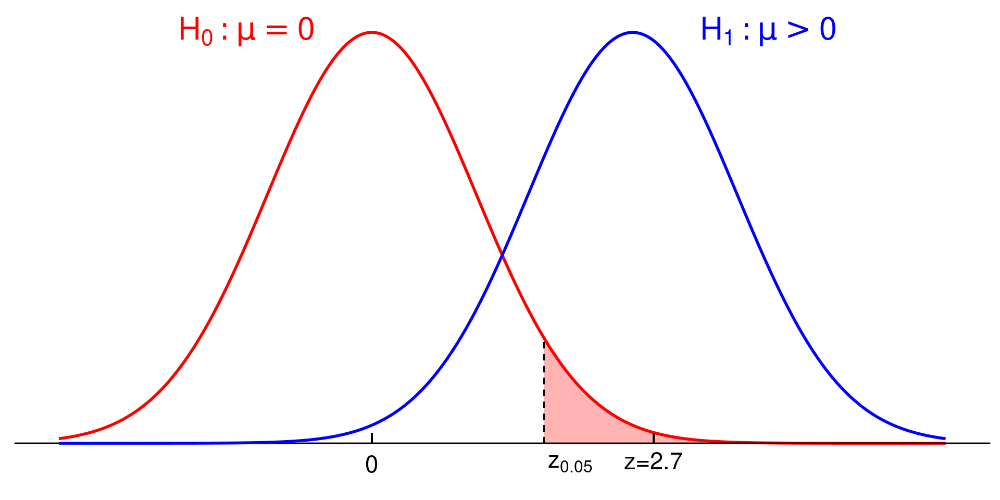
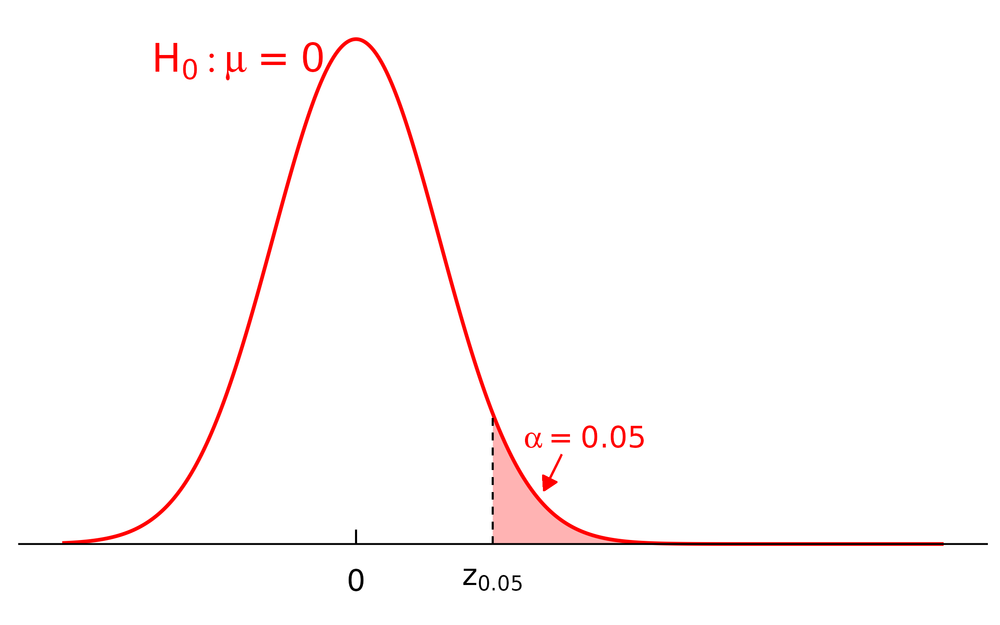
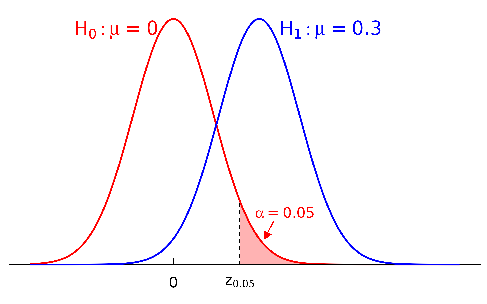
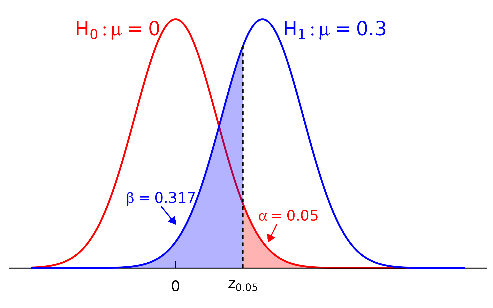

Type I and II Errors
Dec 10, 2024
Target Audience
- Undergraduate students
- Diverse majors
- Taking an Introductory Statistics and Data Science course (e.g. STAT 202, 210)
- Have seen
- Normal distribution
- Hypothesis Test
- Some coding experience (not strictly required)
Overview
- Review of Hypothesis Test framework
- Define Type I & Type II errors
- Derive probability of errors
- Discuss error tradeoff
Hypothesis Test
The use of probability theory and statistics to decide 2 competing options while recognizing the randomness of data.
- Null hypothesis \((H_0)\): a statement of the status quo, i.e., nothing interesting is going on.
- Alternative hypothesis \((H_1)\): a theory that interests you before any data are collected.
New Medication üíä
- \(H_0\): Ineffective
- \(H_1\): Effective
Criminal Trial üöî
- \(H_0\): Not guilty
- \(H_1\): Guilty
New Medication üíä
- \(H_0\): Ineffective
- \(H_1\): Effective
Criminal Trial üöî
- \(H_0\): Not guilty
- \(H_1\): Guilty
Framework
- Presume \(H_0\) is true
- Collect data
- Unlikely data under \(H_0 \implies\) reject \(H_0\)
- Otherwise, we fail to reject \(H_0\)
How do we decide?
Suppose \(X_1, \ldots, X_n \overset{\text{iid}}{\sim} N(\mu, \sigma^2)\), where \(\sigma^2\) is known. Want to test
\[H_0: \mu = \mu_0 \quad\text{vs}\quad H_1: \mu > \mu_0\] at \(\alpha\) level of significance (say \(\alpha=0.05\)).
Test Statistics
\[Z = \frac{\bar{X} - \mu_0}{\sigma/\sqrt{n}} \class{fragment}{\overset{H_0}\sim N(0, 1)}\]
How do we decide?
Suppose \(X_1, \ldots, X_n \overset{\text{iid}}{\sim} N(\mu, \sigma^2)\), where \(\sigma^2\) is known. Want to test
\[H_0: \mu = \mu_0 \quad\text{vs}\quad \class{green-box}{H_1: \mu > \mu_0}\] at \(\alpha\) level of significance (say \(\alpha=0.05\)).
Test Statistics
\[Z = \frac{\bar{X} - \mu_0}{\sigma/\sqrt{n}} \overset{H_0}\sim N(0, 1)\]
Decision Rule
- Reject \(H_0\) if \(z = \frac{\bar{x} - \mu_0}{\sigma / \sqrt{n}} \geq z_{\alpha}\)
- Fail to reject \(H_0\) if \(z = \frac{\bar{x} - \mu_0}{\sigma / \sqrt{n}} < z_{\alpha}\)
Decision Rule
Decision rule: \(z \geq z_{0.05}\)
Decision Rule
Decision rule: \(z \geq z_{0.05}\) ❌ \(\implies\) Fail to reject \(H_0\)
Decision Rule

Decision rule: \(z \geq z_{0.05}\) ✅ \(\implies\) Reject \(H_0\)
Decision Rule
\(z = 2.7\) is more likely to come from the blue distribution \((H_1: \mu > 0)\)
Will we always get it right?
Reality Check
| Decision/Reality | \(H_0\) is True | \(H_1\) is True |
|---|---|---|
| Fail to reject \(H_0\) | ✅ | ❌ |
| Reject \(H_0\) | ❌ | ✅ |
Error Type
- Type I error: Reject \(H_0\) given \(H_0\) is true
- Type II error: Fail to reject \(H_0\) given \(H_1\) is true
How likely is a Type I Error?
\[ \begin{align} P(\text{Type I Error}) &= \class{fragment}{P(\text{reject } H_0 \mid H_0 \text{ is true})} \\[3px] &\class{fragment}{{} = P(Z \geq z_\alpha \mid} \class{fragment}{Z \sim N(0,1))} \\[3px] &\class{fragment}{{} = \alpha} \end{align} \]
How likely is a Type I Error?
\[ \begin{align} P(\text{Type I Error}) &= P(\text{reject } H_0 \mid H_0 \text{ is true}) \\[3px] &= P(Z \geq z_\alpha \mid Z \sim N(0,1)) \\[3px] &= \alpha \end{align} \]
Theorem
\[P(\text{Type I Error}) = \alpha \qquad \forall \, \text{HT}\]
- Directly control Type I Error rate via significance level \(\alpha\)
Pop Quiz ü§î
Can we set \(\alpha\) to 0?
Let’s verify this!
Rejection Rule for \(H_1: \mu > \mu_0\)
\[z = \frac{\bar{x} - \mu_0}{\sigma/\sqrt{n}} \geq z_{\alpha}\]
Rejection Rule for \(H_1: \mu > \mu_0\)
\[z = \frac{\bar{x} - \mu_0}{\sigma/\sqrt{n}} \geq z_{\alpha}\]
set.seed(123)
# Initialize parameters
mu0 <- 0 # H_0: mu = 0
sigma <- 1; n <- 50 # sd and sample size
alpha <- 0.05 # significance level
z_alpha <- qnorm(alpha, lower.tail = F) # ~1.65
n_rej <- 0
# Conduct 10000 HT
for (i in 1:10000) {
x <- rnorm(n, mu0, sigma) # H_0 is true: X ~ N(0,1)
z <- (mean(x) - mu0) / (sigma / sqrt(n)) # observed test statistics
if (z >= z_alpha) n_rej <- n_rej + 1 # count rejections
}Rejection Rule for \(H_1: \mu > \mu_0\)
\[z = \frac{\bar{x} - \mu_0}{\sigma/\sqrt{n}} \geq z_{\alpha}\]
set.seed(123)
# Initialize parameters
mu0 <- 0 # H_0: mu = 0
sigma <- 1; n <- 50 # sd and sample size
alpha <- 0.05 # significance level
z_alpha <- qnorm(alpha, lower.tail = F) # ~1.65
n_rej <- 0
# Conduct HT for 10000 times
for (i in 1:10000) {
x <- rnorm(n, mu0, sigma) # H_0 is true: X ~ N(0,1)
z <- (mean(x) - mu0) / (sigma / sqrt(n)) # observed test statistics
if (z >= z_alpha) n_rej <- n_rej + 1 # count rejections
}
# Estimated P(Type I Error)
n_rej / 10000[1] 0.0478Very close to \(\alpha = 0.05\)!
How should we interpret \(\alpha\)?
Interpretation
If \(H_0: \mu = 0\) were true, there is a 5% chance that the HT procedure will lead to the conclusion of
How likely is a Type II Error?
Rejection Rule for \(H_1: \mu > \mu_0\)
\[z = \frac{\bar{x} - \mu_0}{\sigma/\sqrt{n}} \geq z_{\alpha}\]
\[P(\text{Type II Error})= P(\underbrace{\text{fail to reject } H_0}_{(1)} \mid \underbrace{H_1 \text{ is true}}_{(2)})\]
- When would we “fail to reject \(H_0\)” ? \(\implies\) \(z = \frac{\bar{x} - \mu_0}{\sigma/\sqrt{n}} < z_\alpha\)
- What does “\(H_1\) is true” mean? \(\implies\) \(\mu = \mu_1\), where \(\mu_1\) is a number \(> \mu_0\)
\[\frac{\bar{X} - \mu_1}{\sigma/\sqrt{n}} \overset{H_1}{\sim} N(0, 1)\]
How likely is a Type II Error?
\[ \begin{align} P(\text{Type II Error}) &= \class{fragment}{P(\text{fail to reject } H_0 \mid H_1 \text{ is true})} \\[3px] &\class{fragment}{{} = P\left(\frac{\bar{X} - \mu_0}{\sigma/\sqrt{n}} < z_\alpha \mid \mu = \mu_1\right)} \\[3px] &\class{fragment}{{} = P\left(\bar{X} - \mu_0 < z_\alpha \cdot \frac{\sigma}{\sqrt{n}} \mid \cdots\right)} \\[3px] &\class{fragment}{{} = P\left(\bar{X} < \mu_0 + z_\alpha \cdot \frac{\sigma}{\sqrt{n}} \mid \cdots\right)} \\[3px] &\class{fragment}{{} = P\left(\bar{X} - \mu_1 < \mu_0 - \mu_1 + z_\alpha \cdot \frac{\sigma}{\sqrt{n}} \mid \cdots\right)} \\[3px] &\class{fragment}{{} = P\Bigg(\underbrace{\frac{\bar{X} - \mu_1}{\sigma/\sqrt{n}}}_{\class{fragment}{\overset{H_1}{\sim} N(0,1)}} < \underbrace{\frac{\mu_0 - \mu_1}{\sigma/\sqrt{n}} + z_\alpha}_{\class{fragment}{\text{constant}}} \mid \cdots\Bigg)} \\[3px] &\class{fragment}{{} = \beta \quad\text{by looking up } Z \text{ table}} \end{align} \]
Was my math correct?
Let’s assume \(\mu_0 = 0\) and \(\mu_1 = 0.3\), which satisfies \(H_1: \mu > 0\).
Let’s assume \(\mu_0 = 0\) and \(\mu_1 = 0.3\), which satisfies \(H_1: \mu > 0\).
set.seed(123)
# Initialize parameters
mu0 <- 0; mu1 <- 0.3 # mu1 = 0.3 > 0 = mu0
sigma <- 1; n <- 50 # sd and sample size
alpha <- 0.05 # significance level
z_alpha <- qnorm(alpha, lower.tail = F)
n_not_rej <- 0
# Conduct 10000 HT
for (i in 1:10000) {
x <- rnorm(n, mu1, sigma) # H_1 is true: X ~ N(0.3, 1)
z <- (mean(x) - mu0) / (sigma / sqrt(n)) # observed test statistics
if (z < z_alpha) n_not_rej <- n_not_rej + 1 # count fail to reject
}Let’s assume \(\mu_0 = 0\) and \(\mu_1 = 0.3\), which satisfies \(H_1: \mu > 0\).
set.seed(123)
# Initialize parameters
mu0 <- 0; mu1 <- 0.3 # mu1 = 0.3 > 0 = mu0
sigma <- 1; n <- 50 # sd and sample size
alpha <- 0.05 # significance level
z_alpha <- qnorm(alpha, lower.tail = F)
n_not_rej <- 0
# Conduct 10000 HT
for (i in 1:10000) {
x <- rnorm(n, mu1, sigma) # H_1 is true: X ~ N(0.3, 1)
z <- (mean(x) - mu0) / (sigma / sqrt(n)) # observed test statistics
if (z < z_alpha) n_not_rej <- n_not_rej + 1 # count fail to reject
}
# Estimated beta
n_not_rej / 10000[1] 0.317Let’s assume \(\mu_0 = 0\) and \(\mu_1 = 0.3\), which satisfies \(H_1: \mu > 0\).
set.seed(123)
# Initialize parameters
mu0 <- 0; mu1 <- 0.3 # mu1 = 0.3 > 0 = mu0
sigma <- 1; n <- 50 # sd and sample size
alpha <- 0.05 # significance level
z_alpha <- qnorm(alpha, lower.tail = F)
n_not_rej <- 0
# Conduct 10000 HT
for (i in 1:10000) {
x <- rnorm(n, mu1, sigma) # H_1 is true: X ~ N(0.3, 1)
z <- (mean(x) - mu0) / (sigma / sqrt(n)) # observed test statistics
if (z < z_alpha) n_not_rej <- n_not_rej + 1 # count fail to reject
}
# Estimated beta
n_not_rej / 10000[1] 0.317[1] 0.316871Seems correct! üíØ
How do we interpret \(\beta\)?
Interpretation
If \(H_1: \mu = 0.3\) were true, there is a 31.7% chance that the HT procedure will lead to the conclusion of



Can we minimize both \(\alpha\) and \(\beta\)?
Which should we minimize?
New Medication üíä
- \(H_0\): Ineffective
- \(H_1\): Effective
Type I error: ineffective drug labeled as effective
  Pharma: profit üí≤ üìà
  Patients: paid for placebo üò¢
Type II error: effective drug labeled as ineffective
  Pharma: financial trouble üí≤ üìâ
  Patients: missed better üíä
Expensive üíä \(\implies\) Minimize \(\alpha\)
   Cheap üíä \(\implies\) Minimize \(\beta\)
New Medication üíä
- \(H_0\): Ineffective
- \(H_1\): Effective
Type I error: ineffective drug labeled as effective
  Pharma: profit üí≤ üìà
  Patients: paid for placebo üò¢
Type II error: effective drug labeled as ineffective
  Pharma: financial trouble üí≤ üìâ
  Patients: missed better üíä
Expensive üíä \(\implies\) Minimize \(\alpha\)
   Cheap üíä \(\implies\) Minimize \(\beta\)
- \(H_0\): Not toxic
- \(H_1\): Toxic
Type I error: safe drug labeled as toxic
  Pharma: financial trouble üí≤ üìâ
  Patients: üòê
Type II error: toxic drug labeled as safe
  Pharma: reputation üìâ
  Patients: üòµ üòµ üòµ
Minimize \(\beta\)
Recap
- HT can yield incorrect conclusion!
- \(P(\text{Type I Error})\) is always \(\alpha\)
- \(P(\text{Type II Error})\) or \(\beta\) depends on many factors
- \(\alpha\)
- \(n\) and \(\sigma\)
- \(\mu_1\): the presume value of \(\mu\) under \(H_1\)
- Tradeoff between \(\alpha\) and \(\beta\)
- Context-dependent
- Perspective-dependent